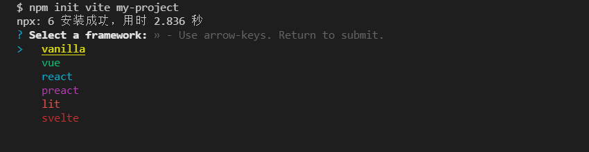
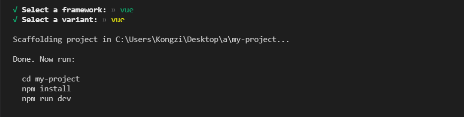
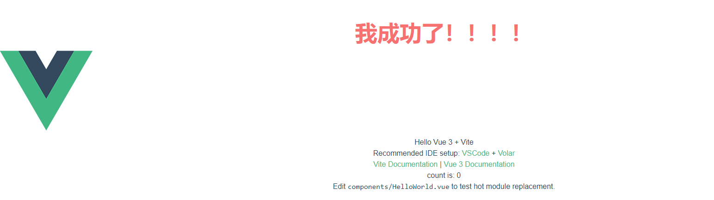

在 Vue 3 和 Vite 项目中安装并配置 Tailwind CSS
tailwind css 是一个我个人十分喜欢的css框架，和你知道的bootstrap，element ui，Antd，bulma 一样。将一些css样式封装好，用来加速我们开发的一个工具。作为一个新兴css框架。在这一两年之内，Tailwind CSS框架的上升率已经稳居第一了。 接下来让我们从安装开始慢慢了解这款css框架吧！
快速开始
1. 初始化vite项目
首先，我们要初始化一个vite项目，npm init vite + 项目名称
1 | |
接下来，我们看到几个vite选项，如下：



我们接着按照提示操作
1 | |
至此， 我们已经成功初始化并安装了一个vue3 + vite项目
2. 安装 Tailwind CSS
通过 npm安装tailwindcss及其对等依赖项，然后运行 init 命令生成tailwind.config.js和postcss.config.js.
1 | |
3. 配置模板路径
打开tailwind.config.js文件，在文件中添加所有模板文件的路径
1 | |
3. 将 Tailwind 指令添加到 CSS
在src文件夹中创建一个index.css文件并@tailwind为 Tailwind 的每个层添加指令。
1 | |
4. 导入 CSS 文件
在 main.js 文件中导入 ./src/index.css
1 | |
5. 运行
运行 npm run dev
1 | |


6. 调试
在vscode的扩展商店搜索 tailwind 安装 tailwind CSS IntelliSense 智能提示插件

我们在 App.vue 使用一下看看效果吧

我们可以随便设置个样式， 看看效果吧
1 | |

恭喜您已经完成了所有步骤！！
本博客所有文章除特别声明外，均采用 CC BY-SA 4.0 协议 ，转载请注明出处！